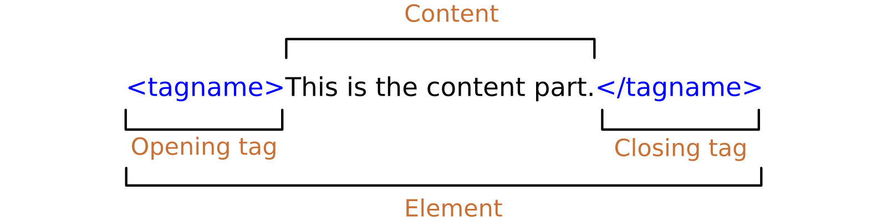
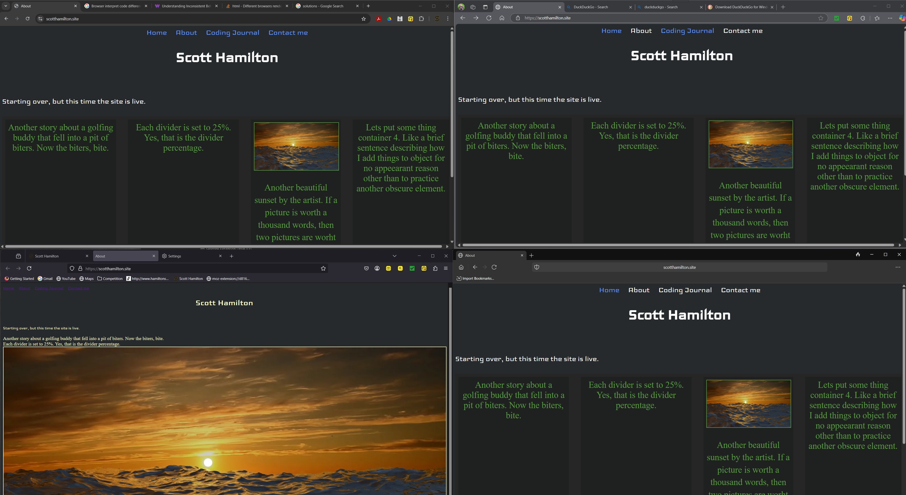

I would first like to note the format for entry time "202504050640" broken down is "0000" year with 4 digits, "0000" month and dqy both is with dual digits and both month and day totaling 4 digits, "0000" the time of day using military time format giving us a code for the time and day = 202504050640. This is how I plan to name things from here on out, including these journal entires as part of a name convention for myself. This portion of this journal is written with VS 2022, logging this journey journalistically in descending order on this page which I will somehow host live someday.
UPDATE on Entries.I like the dashes inbetween the sections of year, day and time; YYYY-MMDD-HHMM. Much easier to read quickly and also easier to keep from making mistakes. I found qutie a few mistakes when adjusting the order from descending to ascending.
I've already learned quite a bit.
A good depiction of this found here
Adding an iframe snipet to pull a list from a txt file with a list that was copied and pasted into.
Something I actually already knew, but didn't realize the impact of is that different browsers behave differently as depicted in the image below. There are many casuses for this, but the big main two and most common reasons are; Browser data, Browser interpretation. this is also known as "Inconsistent Behavior Across Browsers". There are several solutions to this issue that I came across in just a few minutes time. Such as creating a css file for each browser a user might use and somehow directing the browser to use that particular css file to render the page.
Further more, when it comes to testing sites created with simple html code on my own with no help or assistance from other software other than Visual Studo Code. I plan to check out the most commonly used browers that my target audience would use and then test them. Probably up to 4 different browsers. For now that is the plan. I have tested with the Go Live extension option in VSC and it works well, but does not reflect what the browser is doing. For example, when I use google chrome. I get the same result as an initial feed. So that the page doesn't change since chrome collects page information to store on your local system for fast page render times. To avoid this from happening. I will need to change the settings of the browser to never keep any online data, if that kind of thing is even possible these days.
I just installed Duck Duck Go browser and checked out scotthamilton.site which rendered a page that looked like the firefox browser. Then i utilized the Duck Duch Go clear browser date function with one click that acutally took two clicks, but it worked fine as far as I can tell. I then checked out the same site: scotthamilton.site and it looks refreshed. It looks like the edge and chrome browsers that I deleted the browser data from. It's like Duck Duck Go was using files from somewhere else other than it's own browsing data. like browsing data is stored somewhere else other than each browsers programing folders and files.
I'm not entirely certain yet as to how I will use GitHub and multiple devices. Right now I was using google drive, but I'm leaning towards drop box to upload to and download from. So, let me see if I have this right. I am working on system A11. I upload the files to Hostinger to update and test the code from their servers on multiple different browsers. Then I would download all the files from Hostiner onto system A11. Then upload those files to dropbox. Then on system 2070 I would download the files from Hostinger on the local hard drive. Then upload them into Dropbox. Okay. I can see where that does not make any sense.
Thinking out load here. If I dowload the files from the site in a zip file, then these files are the latest and greatest version. Before I open Visual Studio Code, I need to copy the files from the unzipped file that I just downloaded then paste them into the local repository. Then opne Visual Studio Code. The file will immediatley show they have changes to commit. Now right here is where I edit and commit the files. I suppose I could keep files in drop box, like images that I might want to access from anywhere to use in websites. Other than that I won't realy need drop box for keeping website files, rather other files, probably mostly images and video. Same goes for google drive.
SO, I edit the file on system 2070 then commit the changes to GitHub. I would then upload the files to the website's Public folder right form the local repository. Where the file is the latest commit. (right after commiting)
I have had several entries for the journey today. I am currently on 2070 and VSC i think might be the way to go for me, for now anyway. At least I learned most of my way around VS.
VISUAL STUDIO 2022 (VS) and VISUAL STUDIO CODE (VSC) operate differently. Please note, when cloning a repository from GitHub to local device (at least on desktop) when using VS the repository will clone the entire folder into the folder you selected to clone to. Meaning that if you selected D: CLONED REPOS/APRILSWEBSITES, then VS will add APRILSWEBSITES to that location, looking like this; D: CLONED REPOS/APRILSWEBSITES/APRILSWEBSITES. Which is a little too janky for me. With VS when cloning a repository to a local device (desktop) VSC will add the folder of the repository to the folder selected, like this; D: CLONED REPOS/APRILSWEBSITES. Hope that makes sense.
I'm on the iPad here also. Except I have downloaded the coding journal file and I am able to edit with the keyboard that is attached to the iPad. Im also able to utilize the arrow keys on the key board. This is much better. So the plan here is to edit with Textastic or Koder and then I could either just upload this to the website from the iPad without commiting this version to GitHub. Although I believe it would be a good practice to commit the version to GitHub to start properly utilizing GitHub and further get a better understanding of it. So, here it goes. I have a GihHub app on the iPad, I will try utilizing that to accomplish this, if that fails I I fail to accomplish that I will share that. Here it goes. Oh also if I'm succesfull, I'll share that too.
I,m on the iPad right here. editing right from the file on the website in the public folder. So, im not preferring this since i am typing this with the keyboard on the iPad. Woild it be wortH it to download the file and edit it with another editor so that i could utilize the keyboard.
I'm on the 2070. I added a few pages and updated the class for each page.
I'm on the iPad using Koder. While Textasic is fantastic. Koder seems to be just a bit cleaner. So, with Koder I am able to download directly from my website files into a dropbox folder that is linked to the Koder app, where the page I'm working on gets replaced. I then can edit the file on my iPad, test it a bit then upload the file from Koder back to the website. That simple. nice.
On iPad with Textastic. While Koder is clean and all, it keeps crashing. Textastic has the dropbox ability that Koder has, but without the crashing. Even though Koder crases often. it manages to save the files as they were the moment it crashed. I beleive I am liking the method of downloaading from the website, then editing in ny IDE, then uploading the edited version directly to the wwbsite. Although I'm not keeping track of every version, it seems to be a much quicker workflow saving something ery valuable; Time. I still would rather do this on a laptop. Although after thinking about it a tic. A laotop would be significantly larger than my iPad and my iPad can barelyy fit into my car. So, theres that. What does all thid have to do with Coding? Convenience. (if I spelled that right.)
I'm on the 2070 machine. I call it the 2070 machine, because the graphics card is a RTX 2070 super. About 4 gig of VRAM and about 5000 cuda cores. So right now, I'm not editing from Visual Studio Code. I'm editing right from the Public_html folder on Hostinger. The server I test this on is the internet it'self. Which from what I understand is Hostinger's server. The server is the host if I"m not mistaken. Now I could be mistaken, but I don't think so.
'm on my laptop. Yes I got one. It is a touch screen too, which I'm liking. I've created quite few repositories and websites.
I'm on the 2070 machine. I call it the 2070 machine, because the graphics card is a RTX 2070 super. About 4 gig of VRAM and about 5000 cuda cores. So right now, I'm not editing from Visual Studio Code. I'm editing right from the Public_html folder on Hostinger. The server I test this on is the internet it'self. Which from what I understand is Hostinger's server. The server is the host if I"m not mistaken. Now I could be mistaken, but I don't think so.
I suppose I would use github for software if I was developing software. When it comes to websites, idk. Seems like to me it doesn't make good sense to use GitHub for websites. At least I got my feet wet a little with GitHub. I'll have to start a project for some sort of application and use GitHub for it.
Right no i'm on the laptop and this seems to be a premium way to go as far as coding goes. I have one local repository to keep track of, which is way easier and much more simple than multiple local repositories. While I've discovered that I'ts completely possible to have multiple local repositories, I realized I then have to track all local repositories by adding extra steps. While It's not that difficult, right now I'm just learning this so keeping it as simple as possible seems to be the way I am going to go. I get on my laptop and I code for hours on end with no end to the flow of caffeine in sight. I'm in Visual Studio Code, just coding away. I then commit my changes to the remote Git repository of choice. Right now, that is GitHub. This is only due to it's popularity. I've also played with GitKraken, BitLocker, Sourcetree and other similar. So after I commit to GitHub. I then open Hosting in my browser. I then go to the file manager section of a particular site. In this case https://scotthamilton.site. I then open my windows explorer and go to the local repository where I save the files I'm working on before I commit them. The files should be unchanged after the last save before the commit. So, I have the browser open full screen or on half the screen and then open the windows explorer in a small window or on the other side of the screen. I then drag and drop the files into the file on the website and choose to replace (overwrite) them. The files dropped and replaced are instantly live on the web then. This is my work flow.
Entry via VSC on web browser though GitHub. This might be a better idea. Mostly the same functionalities, if not all. I was having trouble cloning a repository I just made with a fresh GitHub Account. I've slowly been moving everything to scoot.hamilton.solutions@gmail.com account emails. If that makes sense. Also scott@scott-hamilton.com. Ya, I love that.
I have entered several journal entires that somehow didn't make it to the website. Here in this folder. I need to remember to download the files from the site before uploading more overwriting what I've put there from another device. Although the webhook idea is excellent for this. It just doesn't seem to work. I don't have that down ye. So, until I can master the webhook, which is probably simple to do, I just somehow make things difficult. Anyway until I master the webhook. I will need to make sure that I download the latest from the absolute main folder, which is the folder in the host's public folder. Alternatively it seem sto make more sense just to edit the html directly on the host, like what I'm doing here right now
When it comes to GitHub, I'll try this. Committing after I have successfully completed all updates to files for that session and device.
So, I know I like creating and editing code in Visual Studio C?ode for all the support with extensions. This combined with FileZila FTP will work for me for a long time I think. So my workflow now is create and edit in VSC, then at the end of a session I commit the changes to GitHub. The session consists of opening at least two programs; Visual Studio Code (VSC) and FileZila (FZ). When I save a file with VSC, I go to FZ then click on the file I saved then drag and drop it into the hosts files. I then get a dialogue box that opens asking me if I want to overwrite the file. I then click on OK. That is what happens in a session as many times as it takes. I just need to remember to save my session's final version on GitHub. That is my coding workflow for now. I tried to connect VSC to Hosting through webhooks, ftp, ssh and all have been unsuccessful. I just changed my scott-hamiltons repository on GitHub to private from public. I'm about to see if that has any adverse affects on the ftp client I"m using. Nope, it did not. I edited then dragged and dropped the new version right into the host's folder; Nice! I took it another step further, now I don't have to keep clicking on OK each time I drag and drop. This came about because while I was able to upload files and even drag and drop files directly into the hosts folder. It would become unaccessible very often, like every 5 minutes or so. The FTP client does become disconnected pretty much just like the browser window on the hosts website with the folder open I need, but with FZ, I only have to click one icon to reconnect versus closing the tab out, going back to Hostinger and logging back in, verifying it is me with an email either copying and pasting the verification code or memorizing it then entering it into the browser window, then navigating to the file manager then to the right folder. Ya, just one click now, nice. Better version control this way too.
Okay, so I read some of my entires and I've noticed a lot of misspellings. YAE!!! good for me. Yes, Yes I like this work flow a lot. Very nice.
The method from 202504270324 has been working pretty well. Lately I',ve been getting into css code. while it seems simple enough it doesn't act the same way in different browsers all the time. Mostly the differences aren't too bad, but sometimes the code doesn't seem to work much at all. I've found that when I check the code digit by digit, I usually find the mistake. A lot of times this corrects the issue. Although I find myself spending hours to figuring out a problem. I also have found that if I start over, it is actually faster process.
So my method has been working very well. I start up VS code, FileZila then download the files I uploaded last from anywhere onto my current system, then edit and upload them. Then upload the files to GitHub at the end of a session. I created several css style files. I'm currently going with "second.css". I got rid of the inline code or inner styles. Still narrowing down these terms. Anyway. I love it.
I've been editing files with VS code, no problems with that. I've been using FileZila to transfer files to the site, problems. Not huge problems, but just not perfect none the less. When I drag and drop the files, sometimes they don't overwrite the files in the destination folders. I've started deleting the files in the destination folder, then send the updated files over via drag and drop.
I plan to make these journal entries an ordered list, somehow soon or something to that effect.
Testing FileZila again. I'm trying to figure out how to keep uploads consistent. Here I have right clicked on the local file in FileZila. Then added the file to the queue. Then in the top main menu I click on Transfer then on Process Queue. Lets see if this update will show up instantly upon a refresh. Don't forget to save the file.
Yes, yes, that worked. Okay back to css editing.
I've decided to rearrange the order in which these entries are listed
When it comes to Git and GitHub, I've learned a couple things so far. The majority of my commits have been to local devices and not on GitHub. This is where Git being installed on my devices plays a role. When using VS Code and commiting changes with a message. Those changes were recorded locally. I noticed this when making many commits on multiple devices then logging into GitHub later only to find that my commits were not there. My commits were all being commited locally. So, I've come up with a work flow for this that works well. There is probably a more efiecient way to do it and I intend to get to there. However, for now. This is what I'll be doing with Git and GitHub.
I will set up Git locally and use it locally on each device. Having each device keep a record of the changes made on that device. As for GitHub. These commits will be made when uploading updated files directly into the GitHub repsoitory. Those commits will have different time lines for commits than each device. I will be able to find these changes in multiple places
For the Integragted Development Enviroment (IDE) that I've been hasseling with, I've decided to start using Visual Studio over Visual Studio Code. For the Enviroment. I can view the results of my changes how they would look in Google Chrome browser window, which is widely used today.
I've swithed to h2 headers for Journal entires.
Cache, There is local browser cache then there is server side cache. I mention this because when updating files on the host then attepmting to view them in a browser, the changes usually will not show unless both the browser cache data and the server cache data are deleted. This cache data is used to give the appearance of fast upload times in the browser when visiting a particualer web address. the "View in Browser" function in Visual Studio (VS) suffices in giving me an immediate view of an uncached version of my updated files, as long as they're saved.
So, moving forward I will utilize the view in browser feature in VS to view my updates. I beleive this will work well.
So, moving forward my mehtod for a sesion is as follows:
Doing this will speed things up. I beleive I solved my IDE.
I've been playing around with css a lot, just playing. it's sort of like a video game to me with the challenges that I get faced with. What seems like to me; puzzles to figure out. I love it and I could do this all day every day forever, I think. Although just like everyone else, I should unplug sometimes and get fresh air and streach my arms.
For the past 2 or 3 years, I've been making many websites with website building apps. Lately I've been coing them. It turns out that I have much more control over every single aspect of everything without the cost of paying for a subscription for a website builder that speeds up the process, but costs. Also, With coding the sites myself, I have the ability to copy any snippets of code I need for a later time and make adjustments as I need to. For example on the HTML page, I have snippents that can be copied with the click of a mouse.
Before I start my day job. I get through my every day routines and part of that routine is to practice coding, what I've learned so far and experiment with learning more right before I walk into work each work day. So, 5 to 7 days a week. Then when I get home, right before I go to sleep.I've been doing this for a few months. Right now, I'm fiddling around with css a lot. Also, I've been using primarily Visual Studio 2022 for all coding. Due to it's local server is more accurate than VSC. I use google chrome browser for the features such as inspect.
At first it worked great, then I got errors. Now how to fix those errors and get GIT in VS working again takes time and the ability to deal with the aggravation of what seems to be losing your time along with your mind.
Having issues understanding Git with VS. So, I started a new folder and copied the contents from 0422-2 folder into 2025-0518-0416 folder. Here I hope to get a grasp on the GIT operations with VS, GIT and GitHub.
I believe that when I click on the option to commit all. That included the .vs file. I then commited everything expect that file, byt right clickin on the .vs folder and choosing the option to ignore file. I further tried this with the old 0422-2 folder, but the option to ignore that folder wasn't present. So, I'll continue in the 2025-0518-0416 folder on this system. I plan to migrate everrything in the other two places that I've been editing code, the laptop and the 2070 system.
Adding theme setting seems to have knocked out my ability to see if I need to commit any changes to specific files. Okay, never mind. I see it.
File naming is a issue again. Once things start to get larger than small they seem to get out of control for me. I'll need to take a small break from learning strictly code this morning to understanding good and effective file naming conventions. I usually take all my notes in NOTION, however I've recently been attracted to OBSIDIAN. So, Obsidian is where I'll take notes for code. Noting that all my notes so far for coding have been placed here in this journal. I plan to publish the Obsidian vault.
So, I just realized that the code I've been using to seperate each entry on this page "section". I will start using "div" since that might be a more reccomended practice.
I'm climbing, but ever so slowly. I've got a good handle on beginer concepts, such as what html, css and javascript code are for. I good general idea of how to use them. In html, I can surely start a webpage and add content. I can stylize the page with css code inside of an html file, while understanding that it is best practice to link to the css code inside the html code to an external file containing the css code. When it comes to javascript, I know enough to copy and paste snippets of javascript code and how and where to paste the code. I can alter the code slightly, enough to give me what I want. Although I am not even really a beginner in javascript at this time. I would say I am 25% efficient in html right now. I would say I'm 15% efficient in css right now. For javascript I would say I'm not efficient at all right now.I beleive I need to become proficient in html and css before movingn onto javascript. As far as learning any other coding languages. I plan on it, but right now I'm utilizing my time resource to html, css and javascript. I at least understand the purposes of each of these three languages and I am starting to understand the purposes of the other languages I plan to learn while learning these three.
When it comes to html particulalry, I have been focusing on the boiler plate. Not by copy and pasting or by adding with shortcut keys which I can do in certain IDEs such as VSC. I write and rewrite over and over the code so that I know it. I get the understanding that every singel digit that is entered including caps or not caps, symbols and characters needed to be displaying on a webpage using particual coded version for th particual characters such as degrees symbol or left bracket and right bracket. For example the degrees symbol is display on a webpage with html code of 5 digits with no spaces and no caps starting with "&" then "#", "1", "7", "6", ";". By combing these together they make °. Which can now be used to display something like this: "The oven was set to 425°F for the pizza". This is how to add this symbol to a webpage. There are many other codes for other characters and symbols not found on a keyboard.
I'm still not completely sold on using a local host to develop webpages or web applicaitons. Right now I'm only altering styles using css on an html page. I do this then save the file then refresh the browser. Then see that nothing happens. No changes take place. I open a folder then find the file I'm making changes to and there it is the changes in real time. Imagine that. So this is interesting. I'm thinking that using local host to test things for web development might be usefull for other things in the development process other than styling such as; well right now I'm not so sure what using a local host to test code changes would be good for unless i need to configure server side code or somehting to that affect. I'll be exloring this, next as this has been slowing me down, when I realize my changes in code aren't being reflected in the browser.
So, I jut read something awesome. I read that you can have all the sites hosted that you need with an organization subscription with a FULL SEAT, which comes to $660 a year. Alternatively I can get up to 10 sites hosted an one time with one account for either 16 a month if I pay yearly or $20 a month if I pay monthly.
It looks like I can create up to 10 sites with the professional subscription. While the Org subscription I could get unlimited sites hosted.
Here is a link to the site I've published from the Figma app
Here is a link to my community profile published from the Figma app.
Here is aanother link to the second make it published from the Figma app using the AI Beta Make it function.
Here is yet another AI Beta Make it Figma creation link to the second make it published from the Figma app using the AI Beta Make it function.
While looking up a way to transition out of an element that had a hover effect. To cause the hover effect to go back gently. Well I ran into all sorts of things. Some involved many lines of javascript. When all along all I had to do was add one line of very simle code. I foudn that code here.